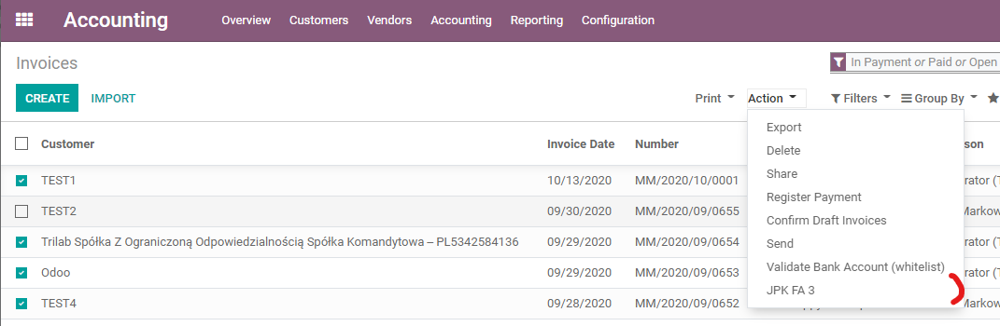

Module for generating JPK FA XML files.

Module for generating JPK FA XML files. Together with the Trilab JPK Transfer module provides full support for the JPK FA reporting process.
The source data for JPK FA are customer invoices.
The data selection mechanism is based on the Odoo filter,
thanks to which it is possible to select a very flexible range of data for the extract
Warning:
Supports Odoo version 15.